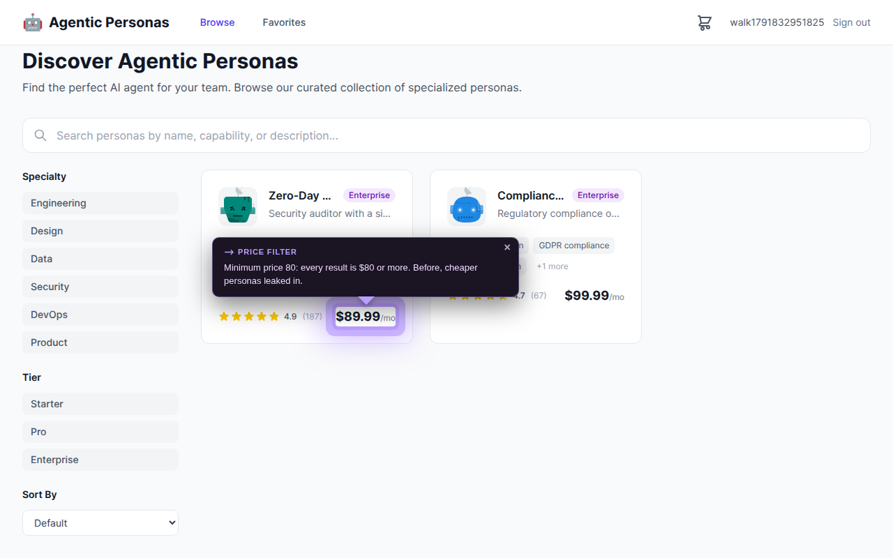
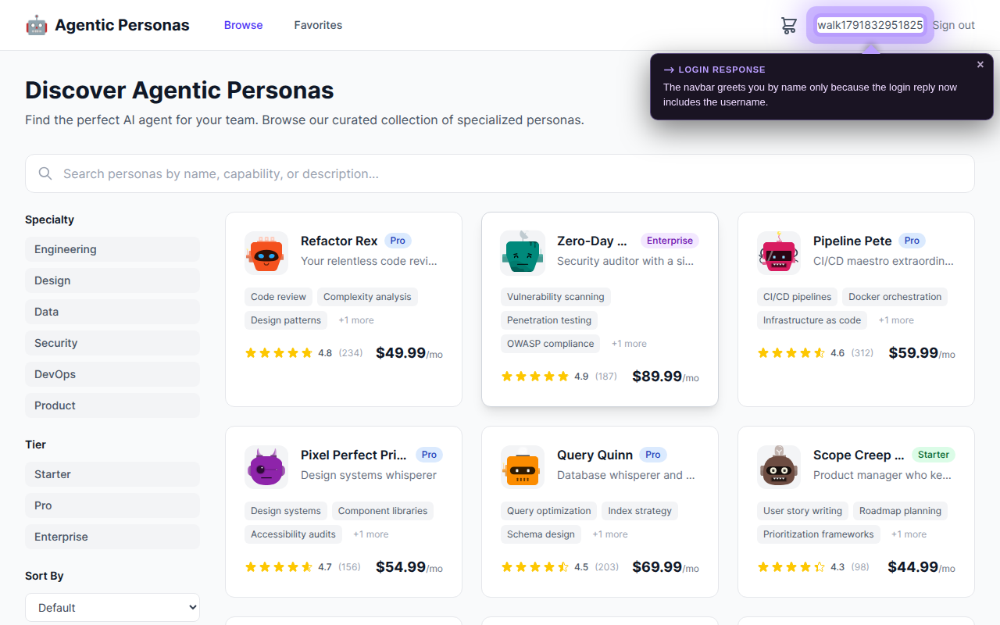
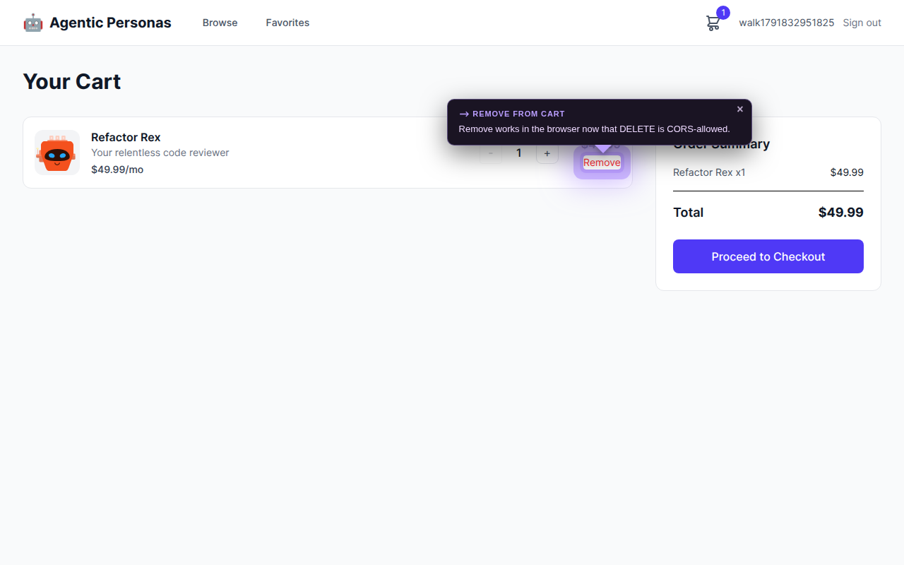
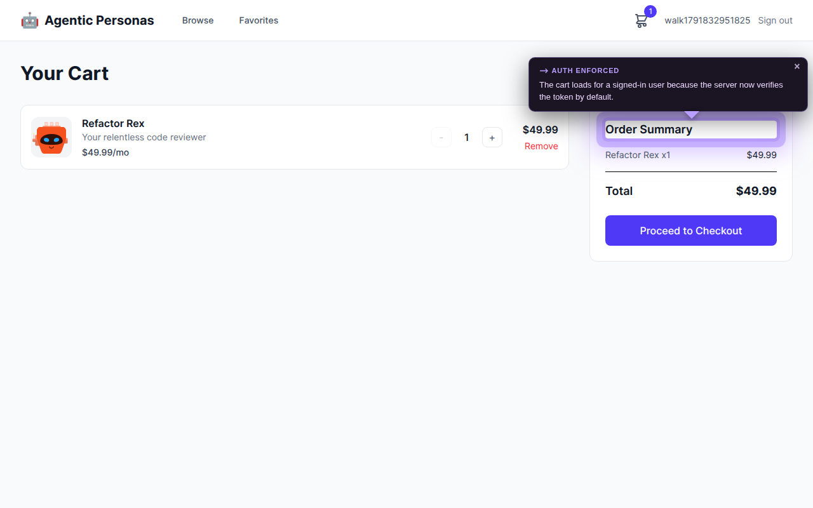
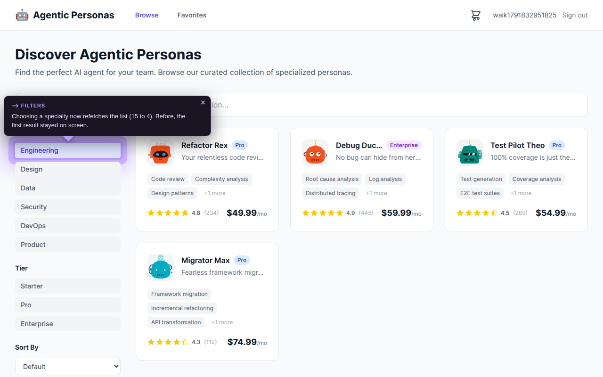
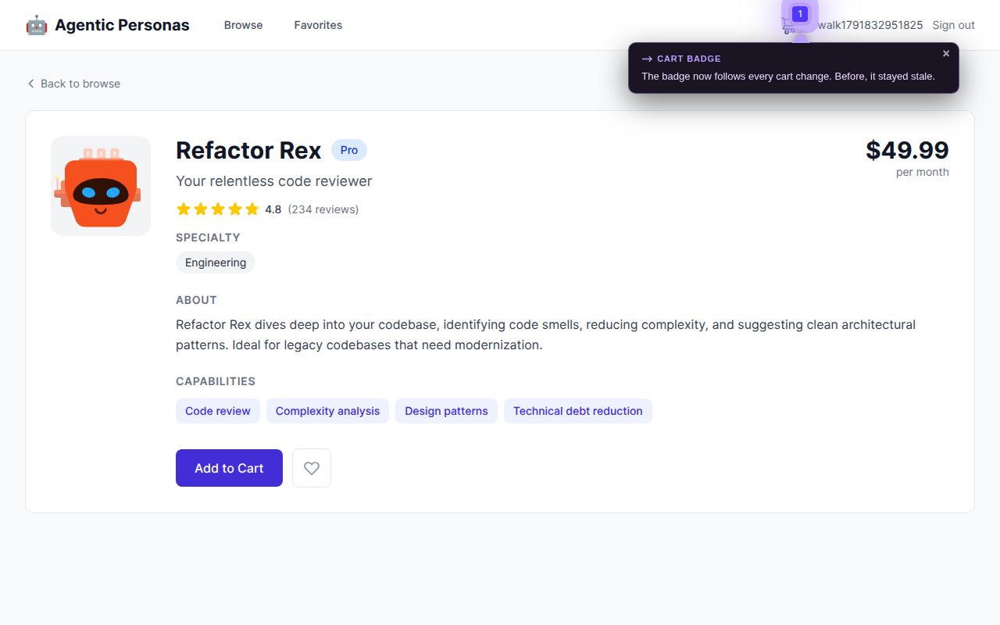

Tap an option to answer. If none fits, tap Other…, type, and press Send. Your answer is saved to this deliverable first, then delivered to the session that asked; the card shows whether it was delivered, read and acted on.
Step 1 of 18
START
16 bugs, one storefront
This is the Agentic Personas storefront from the ECI interview. It shipped with 16 hidden bugs. This tutorial walks through each one on the real app: what a user would have seen, how we found it, and how it was fixed.
Next / Back or the arrow keys move between steps.
API bugs started in the server. Their effect is shown on the page where a user would feel it.
WEB bugs live in the browser app.
The purple border is the LHI Spotlight on the affected element.
Two build-breaking bugs have no UI, so they show the real build error instead.
The whole project would not build, so nothing else could even be tested. We stopped the compiler from picking up an unrelated type package.
terminal · before the fix
$ pnpm build
> @acme/shared build
> tsc
error TS2688: Cannot find type definition file for 'testing-library__jest-dom'.
BUILD_EXIT=2
No screenshot is possible: the app would not build, so there was no UI to show. This panel is the real build error.
How it showed up
error TS2688: Cannot find type definition file for 'testing-library__jest-dom'. (findings/baseline-build.log, BUILD_EXIT=2)
How we found it
First command run on the clone: pnpm build. It stopped at @acme/shared.
What the fix was
tsc auto-includes every @types package it can see in ancestor node_modules. A stub for testing-library__jest-dom had no types, so the compiler failed on a package the code never uses. Shared needs no ambient types, so the fix is to say so explicitly (types: []) instead of installing a dependency to satisfy a file we do not import.
Where in codepackages/shared/tsconfig.json (and apps/api/tsconfig.json)
before compiler auto-included every stray @types package
Asking for personas costing at least $80 also returned cheaper ones.

Live storefront. The purple border marks the affected element. Minimum price 80: every result is $80 or more.
How it showed up
GET /personas?minPrice=80 returned items at or below the minimum before the fix; after, only items from p-002 upward.
How we found it
Read the personas route and its db query while sweeping API behaviour.
What the fix was
A filter named minPrice must keep items at or above the value. The comparison used <= instead of >=. One character, but it silently inverts the feature.
After signing in, the app did not receive the user's name, which the shared contract requires.

Live storefront. The purple border marks the affected element. Navbar shows your name because login now returns it.
How it showed up
POST /auth/login returned a user without username. After the fix it returns user.username (tester in the smoke run).
How we found it
Compared the login handler's response object with the AuthResponse schema in packages/shared.
What the fix was
The shared Zod schema is the contract between web and API. The handler built the user object by hand and left one field out. Fix at the source, not by loosening the schema.
Removing something from the cart or favorites failed in the browser even though the API itself worked.

Live storefront. The purple border marks the affected element. Remove now succeeds in the browser.
How it showed up
The allowed-methods list did not include DELETE, so the browser blocked the preflight request.
How we found it
Read the CORS configuration in the server entry file.
What the fix was
Direct curl calls succeed because CORS is only enforced by browsers. That is why this bug hides from API-only testing. Add DELETE to the allowed methods.
Auth was off by default, so cart and checkout crashed
Cart, favorites and checkout crashed for signed-in users because the server never checked the login token.

Live storefront. The purple border marks the affected element. Cart loads for a signed-in user.
How it showed up
Without a token /cart now returns 401; with a token it returns 200. Before, the handlers dereferenced a missing user.
How we found it
Smoke-testing cart routes: request.user was undefined.
What the fix was
Auth enforcement was opt-in (ENFORCE_AUTH had to equal the string true), so by default the verify hook was skipped. A secure default is the correct behaviour: enforce unless ENFORCE_AUTH is explicitly false. This also changed what the web client must send, so it was cross-checked by the web smoke.
The web app failed its own type check, for the same hidden-type reason plus one unexported type.
terminal · before the fix
$ pnpm --filter @acme/web typecheck
error TS2688: Cannot find type definition file for 'testing-library__jest-dom'.
error TS4023: 'SearchParams' is used by the generated route tree but not exported.
TYPECHECK_EXIT=2
No screenshot is possible: the app would not build, so there was no UI to show. This panel is the real build error.
How it showed up
TS2688 (stray @types), then TS4023: SearchParams is used by the generated route tree but not exported.
How we found it
Ran pnpm --filter @acme/web typecheck.
What the fix was
Two separate causes behind one red result. Fixing the first revealed the second, which is why this is one commit with both changes.
Where in codeapps/web/tsconfig.json + src/routes/index.tsx:9
before stray @types picked up; interface SearchParams (unexported)
Choosing a specialty or typing a search did nothing, because the page kept showing the first result.

Live storefront. The purple border marks the affected element. Filtering refetches the list.
How it showed up
After the fix the smoke run showed the specialty filter changing the list from 15 results to 4.
How we found it
Read the browse route's data query.
What the fix was
The query cache key was a constant, so every filter hit the same cache entry. The key must include the query string, since TanStack Query refetches when the key changes.
The number on the cart icon stayed stale after adding or removing items.

Live storefront. The purple border marks the affected element. Badge follows the cart.
How it showed up
The badge used the key cart-count, but the mutations invalidate the key cart, so the badge never refetched. The smoke run showed the badge following each change.
How we found it
Read the navbar and the cart mutations side by side.
What the fix was
TanStack Query invalidates by key prefix. Renaming the key to cart,count makes the existing invalidation reach it, with no new plumbing.
The project builds, type-checks, and a headless browser walked every main flow with zero errors: register, browse, filter, favorite, cart, checkout, logout.